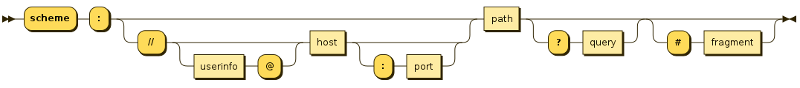
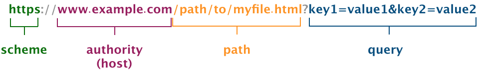
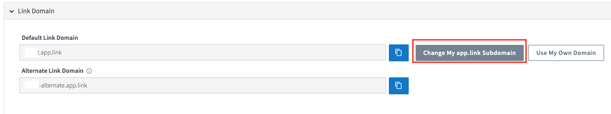
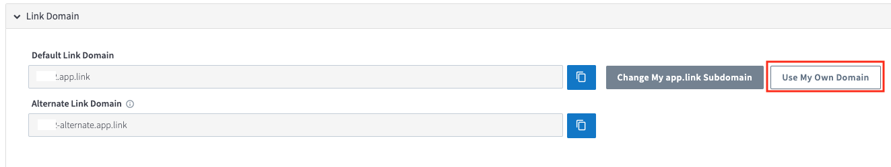

Branch Link 가이드¶
- Author : Bo-hyung Son
- 업데이트: 2019년 10월 29일
개요¶
Branch Link에 대한 전반적인 가이드 문서입니다.
참고문서¶
- Branch Link Overview : Branch Link 가이드 (공식 영문문서)
URL 요약 정리¶
-
URL 문법

-
간단한 URL 샘플

-
URL 구성 요소
scheme,authority(host),path,query,fragment로 구성되어 있습니다.scheme: 리소스 접근에 사용되는 방법이 설정됩니다. 웹에서는 주로https또는http가 사용됩니다.authority(host):userinfo,host,port의 3가지로 구성되어 있습니다. 대부분의 경우host만 사용되며 리소스가 있는 서버의 도메인 네임이 설정됩니다.path: 해당 서버내에서 해당 리소스를 접근 하기위한 상세 위치입니다.path의 각 요소는/로 구분되며, 일반적으로 파일시스템의 디렉토리와 비슷한 형식으로 계층형 구조로 되어 있습니다.query:path와는 달리 비계층형 형식의 데이터를 표시합니다.- 일반적으로 키(key)와 값(value)의 쌍(pair)은 '='으로 구분합니다.
- 일반적으로 각각의 키와 값의 쌍은
&로 구분합니다.
- 주의사항
- URL에 허용되는 것은 [ASCII]문자 중에서 현대영어 대소문자, 아라비안 숫자,
-,.,_,~만 허용됩니다. - ASCII문자중에서 예약된 문자인
:,/,@,?,#,[,]URL의 각각의 세부 구성요소를을 구분하는데 사용되므로 URL인코딩(퍼센트인코딩)이 되어야 합니다. !,$,&,',(,),*,+,,,;,=은userinfo,host,path에서 구분자로 사용이 가능합니다.:,@은path,query,fragment에서 인코딩되지 않을 수 있습니다.?,/는query,fragment에서 인코딩되지 않을 수 있습니다.
- URL에 허용되는 것은 [ASCII]문자 중에서 현대영어 대소문자, 아라비안 숫자,
Link Structure (링크 구성)¶
- 샘플
- Quick Link (퀵링크):
https://a1b2a.app.link/PcKIVEJe0K - Ad Link (광고링크):
https://a1b2a.app.link/PcKIVEJe0K?%243p=a_google_adword
- Quick Link (퀵링크):
Domain Name (도메인 네임)¶
app.link도메인 :app.link- Branch Link에 사용되는 도메인 네임.
- 기존 고객사들중 일부는
bnc.lt를 사용하는 경우도 있습니다. - 원하시는 경우
app.link도메인 대신 자사의 도메인을 사용할 수 있습니다.
app.link도메인의 subdomain :ABC12- 앱생성시 고유한 문자열이 랜덤하게 부여됩니다.
- 원하는 경우 미사용중인 고유한 문자열을 서브도메인으로 선택할 수 있습니다.
Alpha Encoded Link ID (알파벳 인코딩된 링크 아이디):¶
- 대쉬보드에서 링크 생성시 Branch시스템에 저장될때 각각의 링크에 부여되는 고유한 아이디입니다.
PcKIVEJe0K와 같이 알파벳 대소문자와 숫자만을 사용해서 표시되는 이 고유한 문자열을 사용해서 Branch시스템에서 해당 링크의 생성시에 설정되었던 링크데이터를 조회합니다.- 링크데이터는 복수의 키(Key)와 값(Value)의 쌍으로 여러 값들이 저장됩니다.
Link Data (링크데이터)¶
- 링크 Behavior의 제어 또는 분석의 용도로 Branch Link에 설정하는 데이터입니다.
- 링크데이터 설정 방식에 따라 두가지 종류로 구분할 수 있습니다.
Short Link¶
- 가장 일반적인 링크로 대쉬보드에서 링크 생성시 링크데이터를 포함해서 Branch 시스템상내에 저장하며 이때 고유한 링크아이디가 부여됩니다.
https://a1b2a.app.link/PcKIVEJe0K과 같은 Quick링크는 Short링크 방식으로 생성된 것입니다.
Long Link¶
- Short Link와 달리 링크데이터를 링크URL의 Query Parameter를 통해서 동적으로 설정하는 것입니다.
- 미리 생성된 링크또는 다이나믹 링크 모두에 사용가능합니다.
- 기존 생성된 링크에 사용:
- 이미 Branch 시스템상에 생성 및 저장된 Short Link에 Query Parameter를 통해서 값을 추가 설정하는 경우
- 예)
https://a1b2a.app.link/PcKIVEJe0K?%24fallback_url=https%3A%2F%2Fbranch.io%2F
- 다이나믹링크에 사용:
- 사용이전에 링크를 미리 생성하지 않고, Query Parameter로 직접 모든 링크데이터를 설정하는 경우. 기존에 생성된 링크가 아니라 URL에 링크아이디가 없음.
- 예)
https://a1b2a.app.link?%24fallback_url=https%3A%2F%2Fbranch.io%2F
링크데이터의 종류¶
- 컨트롤 데이터:
%24($을 URL인코딩한 것)로 시작되는 키값이며, 링크 클릭시 리다이렉션이나 기타 Behavior들을 제어하기 위해서 사용됩니다.- 예)
$fallback_url: 모든 플랫폼에서 링크 클릭시 디폴트로 리다이렉트할 URL지정. 플랫폼(OS)별로 지정된 경우에는 그것이 우선함.
- 예)
- 분석용 데이터:
~로 시작되는 키 값이며, 데이터 분석에 활용합니다.- 예)
~channel: 광고 유입 채널을 구분하는 값으로 사용합니다. - 예)
~campaign: 각각의 광고캠페인을 구분하는 값으로 사용합니다.
- 예)
- 커스텀 데이터: 고객사에서 원하시는대로 설정하실 수 있는 데이터 입니다.
Link Domain (링크 도메인)¶
개요¶
- Branch Link는 앱별로 고유한 도메인이 할당되며, 일반적인 단축URL 기능을 지원합니다.
- iOS의 경우에는 애플의 Universal Links를 활성화 해주시기 바랍니다.
도메인 종류¶
app.link 랜덤 서브도메인¶
- 대쉬보드를 통한 앱등록 과정에서 기본적으로는
a1b2a와 같은 랜덤 한문자열이app.link도메인의 서브도메인으로 할당됩니다. app.link도메인은 주로 광고링크에 사용됩니다.- 샘플
- Quick Link :
https://a1b2a.app.link/PcKIVEJe0K - Ad Link :
https://a1b2a.app.link/PcKIVEJe0K?%243p=a_awesome_publisher
- Quick Link :
app.link 커스텀 서브도메인¶
- 원하시는 경우 랜덤으로 부여되는 서브도메인 대신 특정 문자열을 직접 지정해서 서브도메인을 설정할 수 있습니다.
- (단. 미사용중인
app.link의 서브도메인 중에서만 선택 가능)
- (단. 미사용중인
- 랜덤서브도메인과 커스텀서브도메인은 주로 광고링크에 사용됩니다.
-
샘플
- Quick Link :
https://branchmonster.app.link/PcKIVEJe0K - Ad Link :
https://branchmonster.app.link/PcKIVEJe0K?%243p=a_awesome_publisher
앱등록 이전에 앱별로 미리 사용할 커스텀 서버도메인 이름을 정해 두시는 것을 권장드립니다.
- Quick Link :
커스텀 도메인¶
- 주로 광고링크가 아닌 Quick Link에서 활용합니다.
- 커스텀 도메인을 설정하게 되면 사용자가 문자, SNS등으로 브랜치링크를 받았을때 해당 링크를 신뢰하고 클릭할 수 있습니다.
- 커스텀 도메인을 사용한 샘플 Branch Quick Link :
https://branchmonster.branch.io/PKrIVEJe0K
- 커스텀 도메인을 사용한 샘플 Branch Quick Link :
-
사내 IT부서에서 해당 서브도메인의
CNAME레코드를custom.bnc.lt로 설정 해주시는 간단한 작업입니다.커스텀 도메인의 경우 회사의 도메인을 Branch에서 사용하게 되는 것이기 때문에 사내 IT팀의 사전 검토가 필요할 것입니다.
-
관련된 자세한 사항은 아래의 문서를 참고해 주시기 바랍니다.
- Link Settings : Advanced Settings Configuration
Link Domain Setting 가이드¶
- 마케팅팀에서 IT및 관련 부서와 협의하셔서 리드 해주시는 것이 권장됩니다.
- 작업 순서 (권장)
- 앱 생성시
app.link도메인에 랜덤 서브도메인이 기본으로 할당됨 - (권장) 대쉬보드에서 원하시는
app.link도메인에 커스텀 서브도메인 설정- 예:
branchmoster.app.link - 설정페이지: https://branch.dashboard.branch.io/link-settings/general 
- 예:
- (권장) IT부서를 통해 신규 앱별 도메인의 생성및 CNAME을 custom.bnc.lt으로 변경
- (권장) 대쉬보드에서 원하시는 커스텀 도메인으로 변경
- 예:
branchmoster.branch.io - 설정페이지: https://branch.dashboard.branch.io/link-settings/general 
- 예:
- 커스텀 도메인 변경시 해당 도메인 정보를 iOS앱 개발팀으로 공지해야 합니다. (Android앱은 별도 공지가 필요 없습니다.)
app.link도메인의 랜덤 서브도메인에서 커스텀 서브도메인으로 변경시 개발팀 공지 필요.- 커스텀 도메인 설정시 개발팀 공지 필요.
- iOS개발팀은 아래의 내용 가이드 문서를 참고하셔서 도메인 변경사항을 적용하셔야 합니다.
- 앱 생성시
Ad Link Structure (광고링크 구조)¶
- 다이나믹 링크를 생성하거나 대쉬보드에서 매체별로 생성된 링크에서 URL에 동적으로 일부 값들을 추가적으로 동적으로 설정하는 방법을 설명합니다.
- 파라메터 설정시 주의사항
- 숫자와 알파벳 만으로 이루어져 있지 않은 경우 꼭 URL인코딩후 설정해 주시기 바랍니다.
베이스 도메인 URL¶
- 대쉬보드에서 설정한
app.link도메인네임 입니다.https://10abc.app.link
3rd Party 광고매체 이름¶
- 광고 링크의 경우 기본적으로 해당 써드파티(3P) 광고 매체 이름을
%243p키를 사용하여 지정합니다. - 연동된 3p 광고매체의 이름은 모두
a_로 시작하며, 광고매체별로 고유하게 부여됩니다.- 대쉬보드에서
CHANNELS & LINKS-Ads-Partner Management에서 광고매체를 선택하면 브라우저 주소창에서 해당 광고매체에 부여된 3p네임을 확인하실 수 있습니다.- 예)
https://branch.dashboard.branch.io/ads/partner-management/a_twitter?tab=settings
- 예)
- 예) 구글 애드워즈
a_google_adwords, 트위터a_twitter
- 대쉬보드에서
- 미연동된 3p 광고매체의 이름은 모두
a_custom_로 시작하며, 이뒤에 고유한 숫자가 부여됩니다.- 예)
https://a1b2a.app.link/PcKIVEJe0K?%243p=a_custom_366540
- 예)
- 광고매체가 설정된 URL 예
- 대쉬보드에서 광고매체 링크를 생성한 경우:
- 도메인네임뒤에 링크아이디가 포함됩니다.
- 미연동매체는
%243p에 광고매체의 3p네임만 설정됩니다. - 연동매체는 해당 매체에서 템플릿으로 설정한 여러 광고매체측 파러메터들이 뒤에 추가됩니다.
https://a1b2a.app.link/PcKIVEJe0K?%243p=a_custom_366540
- 대쉬보드에서 광고매체 링크를 생성하지 않고 다이나믹 링크를 사용한 경우:
https://a1b2a.app.link?%243p=a_custom_366540
- 대쉬보드에서 광고매체 링크를 생성한 경우:
광고ID 파라메터¶
- 앱내 지면이 있는 광고매체의 경우 광고아이디 파라메터가 추가될 수 있습니다.
- OS별 광고아이디 파라메터
%24aaid: 안드로이드 기기의 Google Advertising를 설정합니다.%24idfa: iOS 기기의 IDFA 설정합니다.
- 주의사항:
- 대쉬보드에서 매체링크 생성시 아래와 같이 매체의 매크로를 포함한 링크가 생성됩니다.
%24aaid={GAID}&%24idfa={IDFA}
- 해당 URL은 실제 광고노출시에는 해당 매크로가 실제 기기의 광고아이디로 치환되어 호출이 됩니다.
- 테스트의 목럭으로 해당 URL을 그대로 직접 클릭하는 경우는 기기의 광고아이디에 실제 광고아이디가 설정되지 않으므로, Branch의 자체 광고아이디 검증로직에 의해서 클릭시 에러페이지가 노출됩니다.
- 일반적인 테스트시는 광고아이디 파라메터들을 제거하거나 광고아이디 파라메터에 실제 기기의 광고아이디값을 설정후 테스트 해야 합니다.
- 대쉬보드에서 매체링크 생성시 아래와 같이 매체의 매크로를 포함한 링크가 생성됩니다.
Branch의 분석용 파라메터¶
~channel: 광고 채널/매체~campaign: 캠페인 네임~feature: 광고링크의 경우 paid advertising이 자동 설정됨~tags: 원하시는 태그- 복수의 태그를 설정시
&~tags=tag1&~tags=tag2와 같은 형식으로 설정합니다.
- 복수의 태그를 설정시
TUNE호환 광고주측 캠페인 최적화 파라메터¶
- 기존 TUNE에서 My파라메터라 불리던 광고주측에서 세부 유입경로를 구분하는데 사용하던 분석용 파라메터
~customer_secondary_publisher (구 my_publisher): 광고매체~customer_sub_site_name (구 my_site): 사이트~customer_campaign (구 my_campaign): 캠페인~customer_ad_set_name (구 my_adgroup): 광고그룹~customer_ad_name (구 my_ad): 광고~customer_keyword (구 my_keyword): 키워드~customer_placement (구 my_placement): 광고위치
(TUNE호환) 광고매체측 캠페인 최적화 파라메터¶
-
기존 TUNE에서 Sub파라메터라 불리던 광고매체측에서 세부 유입경로를 구분하는데 사용하던 분석용 파라메터
-
~secondary_publisher (구 sub_publisher): 하위 광고매체 ~sub_site_name (구 sub_site): 사이트~campaign (구 sub_campaign): Branch의 캠페인에 맵핑됨~ad_set_name (구 sub_adgroup): 광고그룹~ad_name (구 sub_ad): 광고~keyword (구 sub_keyword): 키워드~placement (구 sub_placement): 광고노출 위치~click_id: 매체측 클릭아이디
추가 설정 가능한 파라메터들¶
- 아래의 문서를 참고해 주시기 바랍니다.